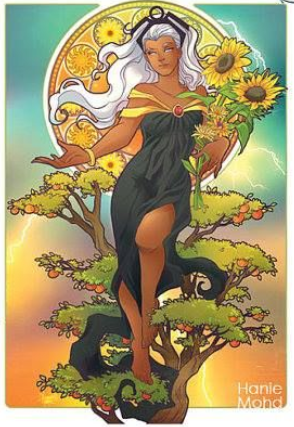

Seasons
’Tis moonlight, summer moonlight,
All soft and still and fair;
The solemn hour of midnight
Breathes sweet thoughts everywhere,
But most where trees are sending
Their breezy boughs on high,
Or stooping low are lending
A shelter from the sky.
And there in those wild bowers
A lovely form is laid;
Green grass and dew-steeped flowers
Wave gently round her head.
